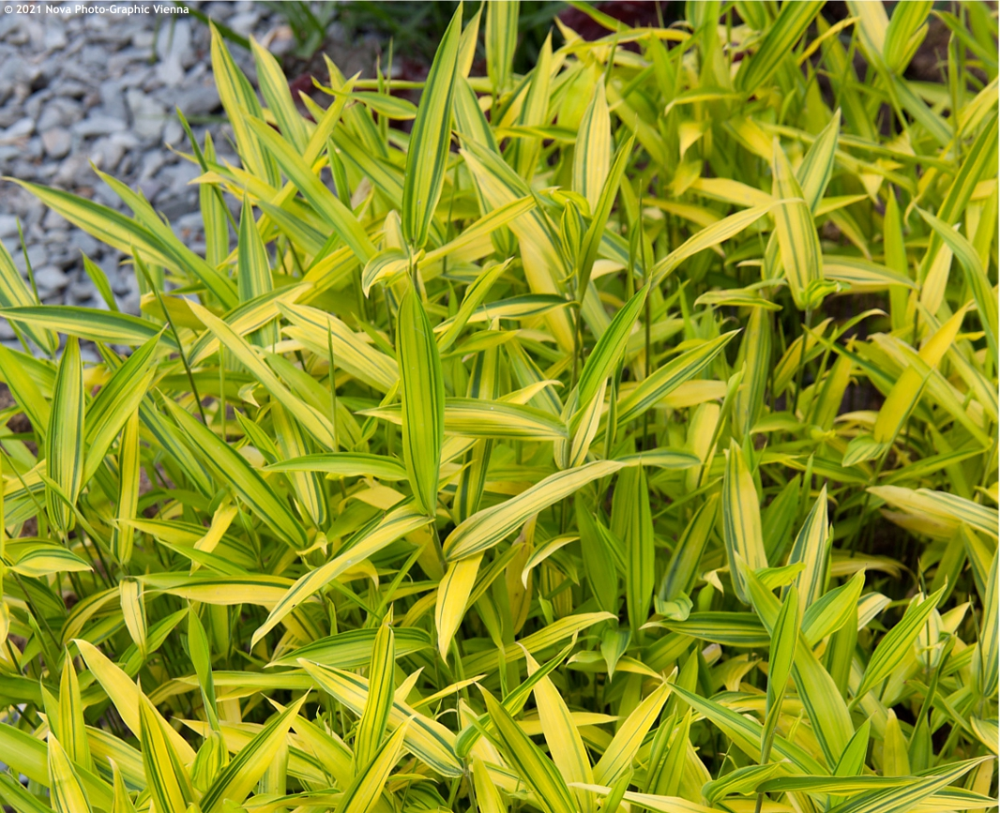
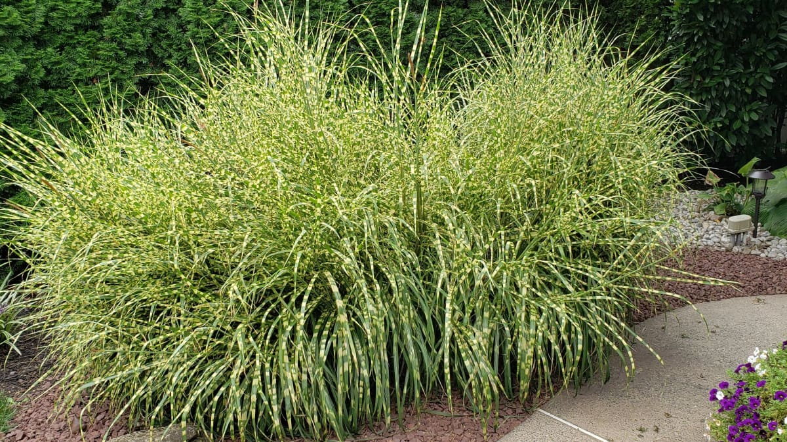

Kertész

Zebra aranybambusz (Pleioblastus auricoma)
Származása. Közép-Kína. Tömött bokrú törpe bambusz. Levelei sárgás zöldek. Első pár évben télen takarást igényel.
Bővebben itt
Zebrafű (Miscanthus sinensis, Zebrinus)
Későn hajt ki. Zöld leveleit sárga kereszt csíkok díszítik. Száraz talajban a levelei vége vissza száradnak. Száraz leveleit tavasszal vágjuk vissza.
Bővebben itt


Vesszős köles (Panicum virgatum, Heavy Metal)
Oszlopos növekedésű. Levelei acél kékek felállók, ősszel sárgára színeződnek.
Bővebben itt
Virágosnád, molnárpántlika (Miscanthus sinensis, Gracillimus)
Származása. Kelet-Ázsia. Későn áprilisban hajt ki. Levelei matt zöldek, ezüstös középpel, ősszel vörösre színeződik. Tó és patak partokra ültethető.
Bővebben itt

Törpe bambusz (Pleioblastus fortunei, Variegata)
0,5 méterre növő fajta. Levelein hosszanti fehér csíkokkal.